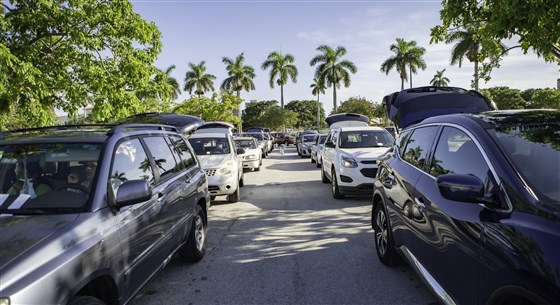

Miami — As states battle the pandemic, job losses and food insecurity, food banks in Florida and across the country are bracing for a dwindling supply of food as federal aid nears its end and Congress stalls on a mew stimulus package.
The South Florida metro area ranks among the top in the country for food insecurity, with people lining up outside food distribution sites by 11 p.m. the night before.
Feeding South Florida has been distributing food to over 1,000 families per week
While demand has not let up, Feeding South Florida president and CEO Paco Vélez is worried about the diminishing food supply.
In the first few months of the pandemic, Feeding South Florida received 160 tractor trailer loads of food per week. In the second phase, from July to August, Vélez said it declined to 110; after that it plummeted to 60 loads per week. During the current phase that ends Monday, only 14 loads have been received.
“We’re still in triage mode. We continue to bring in as much food and get out as much food as we possibly can,” said Vélez.
Vélez said some food banks, like Feeding South Florida, rely on the Coronavirus Aid Relief and Economic Security (CARES) Act to acquire food. The food banks themselves don’t receive the funding; the ones who do are the distributors they use to bring in produce, dairy, and protein as part of the USDA's Farmers to Families Food Box Program.
Pres. Donald Trump signed the CARES Act at the end of March, but negotiations for another deal have been ongoing for five months. Republicans and Democrats have blamed each other for their inability to move ahead.

Cars lined up to receive food at a food distribution at Palm Beach Outlets in West Palm Beach, Florida on 7/21/2020
Florida unemployment has fallen greatly since its peak. Gov. Ron DeSantis reopened the state in September allowing restaurants and bars to operate at full capacity. But Florida still ranks number 12 among the states with the highest number of unemployment claims.
Vélez thinks some restaurant owners are trying to “spread the wealth” and for example, hire eight part-time workers rather than four full-time employees. Others who are working again, even if they’re full-time, are trying to catch up on rent, mortgages, and bills. “That’s where we come in and try to offset some of these costs for families so they can use some of their income to pay for their mortgage or rent while we help them put food on the table,” said Vélez.
Farm Share, another Florida-based food bank, has had an uptick in demand since the amount of Covid cases began to rise again and federal unemployment benefits have run out.
CEO Steve Shelley said the last round of the Farmers to Families program was supposed to end Dec. 30, but most of the allocated food boxes for the state of Florida have already been essentially distributed.
“Next week may be the last week that we receive any food under that program, unless it is renewed by Congress or the U.S. Department of Agriculture,” said Shelley.
“We still have other sources of food, but I will say the Farmers to Families Food Box program has been one of the greatest stopgaps,” said Shelley.
Shelley said the lines they're seeing may not be as robust as they were at the beginning of the pandemic, but he thinks it’s partly because the number of food distributions and the availability of food has grown.
“You’re seeing that demand spread out over a larger number of events rather than a smaller number of events daily,” Shelley said. The U.S. surpassed 13 million coronavirus cases as a third wave has hit most of the country causing partial lockdowns in some states and need for greater food supply.